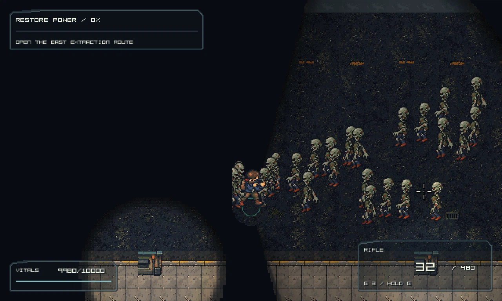
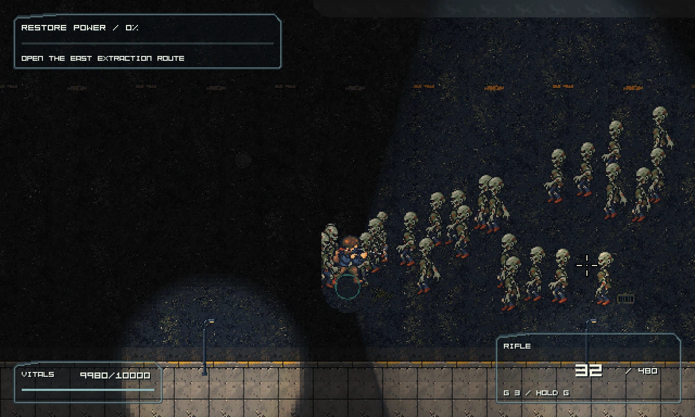
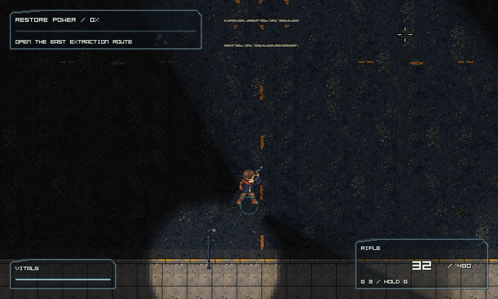
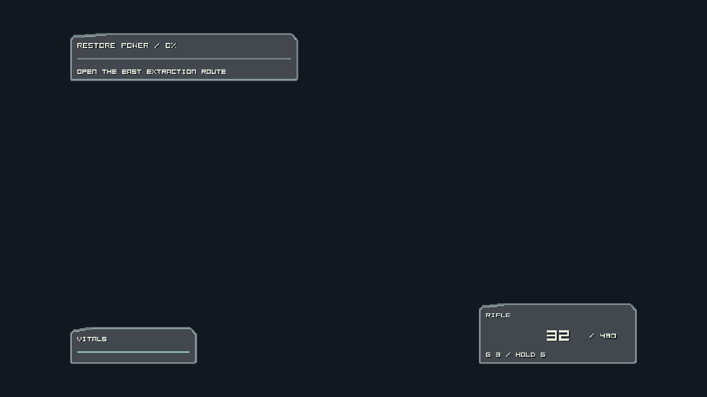

Actual native encounter captures. Static unexplored terrain is dim; observation of actors and mutable objects is unchanged. Open images directly to inspect native pixels.




27 native checks · Warm CPU measurements · 51 preserved encounter records · Integrated technical report · Final receipt